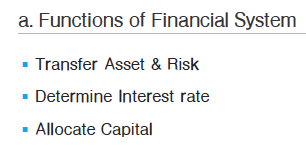

Equity
Function of Financial System

- Allow entities to save and borrow money, raise equity capital, manage risks, trade assets currently or in the future, and trade based on their estimates of asset value.
- Determine the returns that equate the total supply of savings with the total demand for borrowing.
- Allocate capital to its most efficient uses.
Classifications of Assets & Markets

- Financial Assets include securities (stocks and bonds), derivative contracts, and currencies.
- Real assets include real estate, equipment, commodities, and other physical assets.
- Debt securities are promises to repay borrowed funds.
- Equity securities represent ownership positions.
- Public (publicly traded) securities are traded on exchanges or through securities dealers and are subject to regulatory oversight.
- Securities that are not traded in public markets are referred to as private securities.
- Derivative contracts have values that depend on (are derived from) the value of other assets.
- Financial derivative contracts are based on equities, equity indexes, debt, debt indexes, or other financial contracts.
- Physical derivative contracts derive their values from the values of physical assets such as gold, oil, and wheat.
- The primary market is the market for newly issued securities.
- Subsequent sales of securities are said to occur in the secondary market.
- Money markets refer to markets for debt securities with maturities of one year or less.
- Capital markets refer to markets for longer-term debt securities and equity securities that have no specific maturity date.
- Traditional investment markets refer to those for debt and equity.
- Alternative investment markets refer to those for hedge funds, commodities, real estate, collectibles, gemstones, leases, and equipment.
Types of Asset

Real Assets
- Buying real assets directly often provides income, tax advantages, and diversification benefits. However, they often entail substantial management costs.
- They are illiquid because their specialization may result in a limited pool of investors for a particular real asset.
Intermediaries

- Financial intermediaries stand between buyers and sellers, facilitating the exchange of assets, capital, and risk.
- 딜러와 브로커의 차이를 기억할 것
- 브로커는 단순 중개자, 포지션을 잡지 않음
- 딜러는 적극적으로 거래를 받아주는 상대자
- Market Maker
Clearinghouses and Custodians
- Clearinghouses act as intermediaries between buyers and sellers in financial markets and provide.
- Escrow services (transferring cash and assets to the respective parties)
- Guarantees of contract completion
- Assurance that margin traders have adequate capital
- Limits on the aggregate net order quantity (buy orders minus sell orders) of members
- Custodians also improve market integrity by holding client securities and preventing their loss due to fraud or other events that affect the broker or investment manager.
Position

Leverage ratio / Return on margin transaction / Margin Call Price


- Margin call price는 공식을 써도 되고, 일차방정식을 풀어도 된다.
- margin call price = P0 * ((1 - initial margin) / (1 - maintenance margin))
Compare and Contrast Execution, Validity, and Clearing Instructions


Financial system

- Operational efficiency
- low trading cost
- Informational efficiency
- If security prices reflect all the information associated with fundamental value in a timely fashion, then the financial system is informationally efficient.
- Allocational efficiency
- A well-functioning financial system has complete markets that are operationally and informationally efficient, with prices that reflect fundamental values.
- operational efficiency, informational efficiency가 모두 충족되야 allocational efficiency로 나아갈 수 있음
- in informationally efficiently markets, capital is allocated to its most productive use. that is, they are allocationally efficient.
Objectives of Market Regulation

- Without market regulations, many problems could persist in financial markets.
- fraud and theft
- insider trading
- costly information
- defualts
- to solve these problems, market regulation should
- Protect unsophisticated investors so that trust in the markets is preserved.
- Require minimum standard of competency and make it easier for investors to evaluate performance. ex) GIPS
- Prevent insiders from exploiting other investors.
- Require common financial reporting requirements so that information gathering is less expensive.
- Require minimum levels of capital so that market participants will be able to honor their long-term commitments. This is especially important for insurance companies and pension funds that individuals depend on for their financial future.
Security market index
- A security market index is used to represent the performance of an asset class, security market, or segment of a market.
Price return vs. Total return

- An index return may be calculated using a price index or a return index.
- A price index uses only the prices of the constituent securities in the return calculation.
- A rate of return that is calculated based on a price index is referred to as a price return.
- A return index includes both prices and income from the constituent securities.
- A rate of return that is calculated based on a return index is called a total return.
Choices in index construction and management

- What is the target market the index is intended to measure?
- which securities from the target market should be included?
- How should the securities be weighted in the index?
- How often should the index be rebalanced?
- When should the selection and weighting of securities be re-examined?
Weighting methods → Calculate Index

Price weighted
- A price-weighted index is simply an arithmetic average of the prices of the securities included in the index.
- simple
- high price stocks have greater impact
- stock splits result in arbitrary changes
- price-weighted index = sum of stock prices / number of stocks in index adjusted for splits
Equal weighted
- An equal-weighted index is calculated as the arithmetic average return of the index stocks and, for a given time period, would be matched by the returns on a portfolio that had equal dollar amounts invested in each index stock.
- frequent rebalancing
- under and over representation
- simple
- An equal-weighted index places an equal weight on the returns of all index stocks, regardless of their prices or market values.
Market capitalization weighted
- high market cap stocks has greater impact
- securities held in proportion to their value
- similar to a momentum strategy
- A market capitalization-weighted index (or value-weighted index) has weights based on the market capitalization of each index stock as a proportion of the total market capitalization of all the stocks in the index.
- current index value = current total market value of index stocks / base year total market value of index stocks * base year index value
Float-adjusted market capitalization-weighted index
- A float-adjusted market capitalization-weighted index is constructed like a market capitalization-weighted index.
- The weights are based on the proportionate value of each firm’s shares that are available to investors to the total market value of the shares of index stocks that are available to investors.
Fundamental weighted
- An index that uses fundamental weighting uses weights based on firm fundamentals, such as earnings, dividends, or cash flow.
- avoids the bias of market capitalization-weighted indexes toward the performance of the shares of overvalued firms and away from the performance of the shares of undervalued firms.
Rebalancing vs. Reconstitution

- rebalancing - 구성종목 비율 변경
- reconstitution - 구성종목 자체를 변경
Uses of indices

- reflection of market sentiment
- benchmark of manager performance
- measure of market return and risk - CAPM
- measure of beta and risk-adjusted return
- model portfolio for index funds
Types of equity indices

- broad market
- multi-market
- multi-market with fundamental weighting
- sector
- style
Types of fixed income indices

- large universe of securities
- dealer markets and infrequent trading
- Illiquidity, transaction costs, and high turnover of constituent securities make it both difficult and expensive for fixed-income portfolio managers to replicate a fixed -income index.
Types of alternative investments

Commodity indexes
- represent future contracts on commodities
- weighting methods가 다 다름
- Commodity index providers use a variety of weighting schemes.
- futures vs. actual의 차이가 있음
- Commodity indexes are based on the prices of commodity futures contracts, not the spot prices of commodities.
- Commodity futures contracts reflect the risk-free rate of return, changes in futures prices, and the roll yield.
- commodity index return = risk-free interest rate + changes in futures prices + roll yield
- roll yield - roll-over risk에서 오는 수익 또는 손실
Real Estate
- Appraisal indices - 평가금액 기반 index
- Repeat sales indices - 실거래금액 기반 index
- real estate investment trust (REIT) indices
- Real estate indexes can be constructed using returns based on appraisals of properties, repeat property sales, or the performance of Real Estate Investment Trusts (REITs).
- While real properties are quite illiquid, REIT shares trade like any common shares and many offer very good liquidity to investors.
Hedge Funds
- Voluntary investment performance - indices reflect different performances
- 자발적으로 정보를 제공해주기 때문에 provider에 따라서 다름
- survivorship bias
- usually equal weighted index
Market Efficiency

- An informationally efficient capital market is one in which the current price of a security fully, quickly, and rationally reflects all available information about that security.
- In a perfectly efficient market, investors should use a passive investment strategy because active investment strategies will underperform due to transactions costs and management fees.
- Note that market prices should not be affected by the release of information that is well anticipated. Only new information (information that is unexpected and changes expectations) should move prices.
Market value vs. Intrinsic value

- Market value = price
- Intrinsic value = real value (estimate)
- 아무도 모름
- Efficient market: MV = IV → passive strategy
- Inefficient market: estamate IV (valuation) → Active investment
- The market value of an asset is its current price.
- The intrinsic value or fundamental value of an asset is the value that a rational investor with full knowledge about the asset’s characteristics would willing pay.
Factors affecting market efficiency

- number of market participants
- The larger the number of investors, analysts, and traders who follow an asset market, the more efficient the market.
- information availability
- limit to trading - arbitrage & shortsale
- Arbitrage refers to buying an asset in one market and simultaneously selling it at a higher price in another market.
- Short selling improves market efficiency. The sales pressure from short selling prevents assets from becoming overvalued.
- transaction costs and information costs
Efficient Market Hypothesis
Contrast weak-form, semi-strong-form, and strong-form market efficiency.


Weak-form market efficiency
- The weak form of the efficient markets hypothesis (EMH) states that current security prices fully reflect all currently available security market data.
- Past price and volume (market) information will have no predictive power about the future direction of security prices.
- In a weak-form efficient market, an investor cannot achieve positive risk-adjusted returns on average by using technical analysis.
Semi-strong-form market efficiency
- Current security prices fully reflect all public available information.
- The implication is that an investor cannot achieve positive risk-adjusted returns on average by using fundamental analysis.
Strong-form market efficiency
- Security prices fully reflect all information from both public and private sources.
- This means that no group of investors has monopolistic access to information relevant to the formation of prices, and none should be able to consistently achieve positive abnormal returns.
Implications
Explain the implications of each form of market efficiency for fundamental analysis, technical analysis, and the choice between active and passive portfolio management.

- Abnormal return = actual return - expected return
- Technical analysis seeks to earn positive risk-adjusted returns by using historical price and volume (trading) data.
- Generally, the evidence indicates that technical analysis does not produce abnormal profits, so we cannot reject the hypothesis that markets are weak-form efficient.
- Fundamental analysis is based on public information such as earnings, dividends, and various accounting ratios and estimates.
- The evidence in developed markets indicates that markets are generally semi-strong form efficient. However, there is evidence of semi-strong form inefficiency in some emerging markets.
- If so, what is the role of a portfolio manager? Even if markets are efficient, portfolio managers can add value by establishing and implementing portfolio risk and return objectives and by assisting client with portfolio diversification, asset allocation, and tax management.
Anomalies
Describe market anomalies.

- anomaly가 존재함에도 시장은 효율적인가?
- consistent한 abnormal return을 얻을 수 없다면 시장은 여전히 효율적
Time series anomalies
- Calendar anomalies
- January effect, Weekend effect, holiday effect
- Overreaction and momentum
Cross sectional anomalies
- Size effect - small cap won large cap
- Value effect - value stock won growth stock
Other anomalies
- Closed-end investment fund - traded under NAV
- Earnings surprise - time lag
- IPO underpriced
Behavioral Finance
Describe behavioral finance and its potential relevance to understanding market anomalies.

- Behavioral finance의 존재에도 불구하고 시장은 효율적인가?
- 인간의 합리성이 효율적 시장의 전제라면 시장은 비효율적
- but consistent한 abnormal return을 얻을 수 없다면 시장은 여전히 효율적
Loss aversion
- refers to the tendency of investors to be more risk averse when faced with potential losses than they are when faced with potential gains.
- Investors dislike a loss more than they like a gain of an equal amount.
Overconfidence
- a tendency of investors of overestimate their abilities to analyze security information and identify differences between securities market prices and intrinsic values.
Herding
- a tendency of investors to act in concert on the same side of the market, acting not on private analysis, but mimicking the investment actions of other investors.
Information cascades
- results when investors mimic the decisions of others. The idea is that uninformed or loss-informed traders watch the actions of informed traders and follow their investment actions.
Types of equity
Describe characteristics of types of equity securities.

Common stock
- voting right
- statutory voting vs cumulative voting
- 일반적인 투표 vs 집중투표제
- residual claim
- 잔여재산 처분권
Preference stock
- Dividends are fixed and typically higher than common dividends
- 보통 배당금액이 고정되어 있음
- Rank above common stock for dividend payments and liquidation claims
- 배당 우선권, 잔여재산 처분 순위가 보통주보다 위에 있음
- Generally no voting right
- Cumulative vs. Uncumulative
- 빠진 배당을 다음에 챙겨주느냐의 차이
- Participating vs. Nonparticipating
- 초과이익이 났을 때 추가로 배당을 더 받을 수 있느냐 없느냐의 차이
- Earn a higher dividend
- Opportunity to share in profits
- Benefit from a rise in the price of the common shares
- Price is less volatile than the common share price
- Convertible
- Convertible preference shares can be exchanged for common stock at a conversion ratio determined when the shares are originally issued.
- dividend higher than a common stock
- If the firm is profitable, the investor can share in the profits by converting his shares into common stock.
- The conversion option becomes more valuable when the common stock price increases.
- Preferred shares have less risk than common shares because the dividend is stable and they have priority over common stock in receiving dividends and in the event of liquidation of the firm.
- Convertible preference shares can be exchanged for common stock at a conversion ratio determined when the shares are originally issued.
Equity class
Describe difference in voting rights and other ownership characteristics among different equity classes.

Private vs. Public
Distinguish between public and private equity securities.

Private
- less liquidity, negotiated price
- limited disclosure, lower reporting cost, weaker corporate governance
- focus on long term prospect, potentially greater return
- Venture capital
- Leveraged Buyouts(LBO)
- Management Buyouts - 경영진이 LBO 참여하는 경우
- Private investment in public equity (PIPE) - 상장기업 투자 사모펀드
Investing in nondomestic equity
Describe methods for investing in non-domestic equity securities.

- Direct investment
- Depository receipts (DR)
- A bank deposits shares of the foreign firm and then issues receipts representing ownership of a specific number of the foreign shares.
- The depository bank acts as a custodian and manages dividends, stock splits, and other events.
- Although the investor does not have to convert to the foreign currency, the value of the DR is affected by exchange rate changes, as well as firm fundamentals, economic events, and any other factors that affect the value of any stock.
- Sponsored vs. Unsponsored
- DR이 firm 요청이면 sponsored, investor들이 voting right 가짐
- DR이 investor 요청이면 unsponsored, depository bank가 voting right 가짐
- Global Depository Receipt (GDR)
- non US DR
- American Depository Receipt (ADR)
- US DR
- Global Registered Share (GRS)
- 여러 나라에 여러 나라 통화로 상장
- Basket of listed depository receipts (BLDR)
- 여러개의 DR을 모아서 만든 ETF
Risk and Return characteristics of Equity
Compare the risk and return characteristics of different types of equity securities.

- Return의 구성
- 배당, 가격상승, 환차익(차손)
- Risk는 uncertainty of future cash flow
- The risk of equity securities is most commonly measured as the standard deviation of returns.
- Preferred stock is less risky than common stock because preferred stock pays a known, fixed dividend to investors that is a large part of the return, whereas common dividends are variable and can vary with earnings.
- Putable < non-callable < callable
- cumulative < non-cumulative
Role of Equity
Explain the role of equity securities in the financing of a company’s assets.

- Equity capital is used for the purchase of long-term assets, equipment, research and development, and expansion into new businesses or geographic area.
- Equity securities provide the firm with “currency” that can be used to buy other companies or that can be offered to employees as incentive compensation.
- Having publicly traded equity securities provides liquidity, which may be especially important to firms that need to meet regulatory requirements, capital adequacy ratios, and liquidity ratios.
Market value vs. Book value
Distinguish between the market value and book value of equity securities.

- Book value = Asset - Liability
- The market value of equity is the total value of a firm’s outstanding equity shares based on market prices and reflects the expectations of investors about the firm’s future performance.
ROE, Cost of Equity, Required Rate of Return

Cost of Equity
- 계약상 지불의무 x → CAPM, DDM 등을 활용해 추정
- 주주의 부 극대화를 위해 자본비용 최소화 노력 → minimum required rates of returnd의 proxy로 작용
- 추정 비용 개념임
- A firm’s cost of equity is the expected equilibrium total return (including dividends) on its shares in the market. It is usually estimated in practice using a dividend discount model or the capital asset pricing model.
- A firm’s cost of equity can be interpreted as the minimum rate of return required by investors (in the aggregate) to compensate them for the risk of the firm’s equity shares.
Required rates of return
- 투자자마다 다른 추정 → 다양한 required return
- 요구수익률
ROE = NI / BV
- higher ROE가 반드시 좋은 지는 검증이 필요함
- Leverage ratio를 높이면서 ROE도 높일 수 있기 때문
- Higher ROE is generally viewed as a positive for a firm, but the reason for an increase should be examined.
- A firm can also issue debt to repurchase equity, thereby decreasing the book value of equity. This would increase the RPE but also make the firm’s shares riskier due to the increased financial leverage (debt).
Uses of Industry Analysis

- Understanding a company’s business and business environment
- Identifying active equity investment opportunities - Industry Rotation
- Portfolio performance attribution
- Industry analysis is important for company analysis because it provides a framework for understanding the firm.
- Understanding a firm’s business environment can provide insight about the firm’s potential growth, competition, and risks.
- In an active management strategy, industry analysis can identify industries that are undervalued or overvalued in order to weight them appropriately. Some investors in industry rotation, which is overweighting or underweighting industries based on the current phase of the business cycle.
- In performance attribution analysis, the sources of portfolio return are determined relative to a benchmark.
Industry Classification

- Products and/or Services
- Business-cycle sensitivities - cyclical vs. noncyclical
- Statistical similarities
- One way to group companies into an industry is by the products and services they offer.
- A sector is a group of similar industries.
- Systems that are grouped by products and services usually use a firm’s principal business activity (the largest source of sales or earnings) to classify firms.
- Firms can also be classified by their sensitivity to business cycles. This system has two main classifications: cyclical and non-cyclical firms.
- Statistical methods, such as cluster analysis, can also be used. This method groups firms that historically have had highly correlated returns.
Industry Classification System
- Commercial classification - 개별회사 명시, 업데이트 주기 짧음, Size별 구분, for profit, public firm을 대상으로 함
- The broadest category is generally the sector level, followed by industry and sub-industry.
- Commercial industry classifications include the Global Industry Classification Standard developed by Standard & Poor’s and MSCI Barra, Russell Global Sectors, and the Industry Classification Benchmark developed by Dow Jones and FTSE.
- Governmental classification - 개별회사 명시 않음, Large-small, public-private, profit-non profit 구별 않음
- Most governments do not identify individual firms in a group, so an analyst cannot know the groups’ exact composition.
- Commercial providers identify the constituent firms.
- Government systems are updated less frequently.
- Governments do not distinguish between small and large firms, for-profit and not-for-profit organizations, or private and public firms.
- Commercial providers only include for-profit and public firms and can delineate by the size of the firm.
Cyclical and Noncyclical companies. Limitations of Industry and Company Descriptiors

- Cyclical company
- Profits strongly correlated with economic activity
- high operating leverage
- expensive & nonessential products
- A cyclical firm is one whose earnings are highly dependent on the stage of the business cycle. These firms have high earnings volatility and high operating leverage.
- Cyclical industries, which are supposed to be dependent on the business cycle, often include growth firms that are less dependent on the business cycle.
- Non-cyclical sector
- Defensive industries - 산업 특성 상 business cycle 영향이 낮음
- Growth industries - 강한 성장성으로 business cycle 영향이 낮음
- A non-cyclical firm produces goods and services for which demand is relatively stable over the business cycle.
- Non-cyclical industries can be further separated into defensive (stable) or growth industries.
- Defensive industries are those that are least affected by the stage of the business cycle and include utilities, consumer staples (such as food producers), and basic services (such as drug stores).
- Growth industries have demand so strong they are largely unaffected by the stage of the business cycle.
- Non-cyclical industries can be affected by severe recession, as was the case in the 2008-09 downturn. Defensive industries may not always be safe investments.
- Defensive industries may also contain some truly defensive and some growth firms.
Limitation of industry and company analysis
- cyclical industry로 분류한 회사 중에서도 경기민감도가 낮은 회사가 존재
- Defensive industry로 분류된 회사 중에서도 growth firm이 포함될 수 있음
- 2008년과 같은 Deep recession에서는 섹터 구분 무관하게 모두 영향 받음
Peer Group
- A peer group is a set of similar companies an analyst will use for valuation comparisons.
- More specifically, a peer group will consist of companies with similar business activities, demand drivers, cost structure drivers, and availability of capital.
- To form a peer group, an analyst will often start by identifying companies in the same industry classification, using the commercial classification providers previously described.
Elements in industry analysis
- A through industry analysis should include the following elements:
- Evaluate the relationships between macroeconomic variables and industry trends using information from industry groups, firms in the industry, competitors, suppliers, and customers.
- Estimate industry variables using different approaches and scenarios.
- Compare with other analysts’ forecasts of industry variables to confirm the validity of the analysis and potentially find industries that are misvalued as a result of consensus forecasts.
- Determine the relative valuation of different industries.
- Compare the valuations of industries across time
- Analyze industry prospects based on strategic groups
- Classify industries by life-cycle stage, whether it is embryonic, growth, shakeout, mature, or declining
- Position the industry on the experience curve, which shows the cost per unit relative to output. The curve declines because of increases in productivity and economies of scale, especially in industries with high fixed costs.
- Consider the forces that affect industries, which include demographic, macroeconomic, governmental, social, and technological influences.
- Examine the forces that determine competition within an industry.
Strategic analysis

- 산업분석은 산업의 매력도를 평가하는 것
- Economic profit이 있는 산업이 매력적인 것
- Economic profit = ROIC - cost of capital
- Economic profit은 pricing power에 의해 결정
- Economic profits, the return on invested capital minus its cost
- Strategic analysis, which examines how an industry’s competitive envrionment influences a firm’s strategy. The analysis framework developed by Michael Porter delineates five forces that determine industry competition.
- Rivalry among existing competitors
- Rivalry increases when many firms of relatively equal size compete within an industry.
- high fixed costs lead to price decreases as firms try to operate at full capacity.
- Industries with products that are undifferentiated or have barriers (are costly) to exit tend to have high levels of competition.
- Threat of entry
- Industries that have significant barriers to entry will find it easier to maintain premium pricing.
- Threat of substitutes
- Commodity-like products have high levels of competition and low profit margins. The more differentiated the products are within an industry, the less price competition there will be.
- Power of buyers
- Buyers’ ability to bargain for lower prices or higher quality influences industry profitability.
- Power of suppliers
- Suppliers’ ability to raise prices or limit supply influences industry profitability.
- The first two forces deserve further attention because almost all firms must be concerned about the threat of new entrants and competition that would erode profits.
- The following summary describes how these two factors influence the competitive environment in an industry:
- Higher barriers to entry reduce competition
- Greater concentration (a small number of firms control a large part of the market) reduces competition, whereas market fragmentation (a large number of firms, each with a small market share) increases competition.
- Unused capacity in an industry, especially if prolonged, results in intense price competition.
- Stability in market share reduces competition.
- More price sensitivity in customer buying decisions results in greater competition.
Effects of industry concentration, ease of entry, capacity and market share stability

- High barriers to entry benefit existing industry firms because they prevent new competitors from competing for market share and reducing the existing firms’ return on capital.
- High barriers to entry do not necessarily mean firm pricing power is high.
- Industries with high barriers to entry may have strong price competition among existing firms.
Industry concentration
- High industry concentration does not guarantee pricing power.
- Absolute market share may not matter as much as a firm’s market share relative to its competitiors.
- If industry products are undifferentiated and commodity-like, then consumers will switch to the lowest-priced producer.
- Industries with greater product differentiation in regard to features, reliability, and service after the sale will have greater pricing power.
- If the industry is capital intensive, and therefore costly to enter or exit, overcapacity can result in intense price competition.
Industry Capacity
- Industry capacity has a clear impact on pricing power.
- Undercapacity, a situation in which demand exceeds supply at current prices, results in pricing power and higher return on capital.
- Overcapacity, with supply greater than demand at current prices, will result in downward pressure on price and lower return on capital.
Industry life cycle

- Embryonic stage
- Slow growth
- High prices
- Large investment required
- High risk of failure
- Growth stage
- Rapid growth
- Limited competitive pressures
- Falling prices
- Increasing profitability
- Shakeout stage
- Growth has slowed
- Intense competition
- Increasing industry overcapacity
- Declining profitability
- Increased cost cutting
- Mature stage
- Slow growth
- consolidation
- high barriers to entry
- Stable pricing
- Superior firms gain market share
- Decline stage
- Negative growth
- Declining prices
- Consolidations
Industry comparison
- Major firms
- Barriers to entry and success
- Industry concentration
- Influence of industry capacity on pricing
- Industry stability
- Life cycle
- Competition
- Demographic influences
- Government influence
- Social influence
- Technological influence
- Business cycle sensitivity
External factors

- Macroeconomic factors can be cyclical or structural (longer-term) trends, most notably economic output as measured by GDP or some other measure. Interest rates affect financing costs for firms and individuals, as well as financial institution profitability. Credit availability affects consumer and business expenditures and funding.
- Technology can change an industry dramatically through the introduction of new or improved products.
- Demographic factors include age distribution and population size, as well as other changes in the composition of the population. An again of the overall population can mean significant growth for health care industry and developers of retirement communities.
- Governments have an important and widespread effect on businesses through various channels, including taxes and regulation.
- Social influences relate to how people work, play, spend their money, and conduct their lives; these factors can have a large impact on industries.
Company analysis

- Company analysis involves analyzing the firm’s financial condition, products and services, and competitive strategy. Competitive strategy is how a firm responds to the opportunities and threats of the external environment.
- Porter has identified two important competitive strategies that can be employed by firms within an industry: a cost leadership (low-cost) strategy or a product or service differentiation strategy.
- A company analysis should include the following elements:
- Firm overview, including information on operations, governance, and strengths and weaknesses.
- Industry characteristics
- Product demand
- Product costs
- Pricing envrionment
- Financial ratios, with comparisons to other firms and over time
- Projected financial statements and firm valuation.
- A firm’s return on equity (ROE) should be part of the financial analysis. The ROE is a function of profitability, total asset turnover, and financial leverage (Debt)
Spreadsheet modeling
- The problem with this method is that the models’ complexity can make their conclusions seem precise. However, estimation is performed with error that can compound over time. Analyst should also be able to explain the assumptions of a spreadsheet model.
41.a. Evaluate whether a security, given its current market price and a value estimate, is overvalued, fairly valued, or undervalued by the market.


- Intrinsic value > market price → undervalued
- Intrinsic value < market price → overvalued
- Intrinsic value = market price → fairly valued
41.b. Describe major categories of equity valuation models.

- Present value models
- Dividend discount model
- Free cash flow to equity model

- Multiplier models
- Share price multiples
- Enterprise value multiples

- Asset-based valuation models
- Asset minus liabilities & preferred shares

41.c. Describe regular cash dividends, extra dividends, stock dividends, stock splits, reverse stock splits, and share repurchase.

- Cash dividend
- 말 그대로 현금배당
- regular dividends - 정기배당
- Special dividends(=extra dividend) - 특별배당
- Stock dividend
- 주식배당
- Dividends paid out in new shares → each share will be worth less
- Retained Earnings를 Capital로 이동하는 회계처리
- Stock splits
- 주식분할
- 가치에 아무런 영향을 안줌
- Reverse stock splits
- 주식병합
- 가치에 아무런 영향을 안줌
- Share repurchase
- 자사주 매입
- 현금배당과 같은 효과인데, 배당은 세금을 내기 때문에 배당 보다 좋을 수 있음
41.d. Describe dividend payment chronology.

- Declaration date
- 배당결의일
- Ex-dividend date
- 배당락일
- 배당락일 전에 매수해야 배당을 받을 수 있음
- Holders-of-record date
- 주주명부 폐쇄일
- Payment date
- 배당 지급일
41.e. Explain the rationale for using present value models to value equity and describe the dividend discount and free-cash-flow-to-equity models.

Present valuation methods에는 대표적으로 두 개가 있음
- Dividend discount model (DDM)
- 배당할인모형

./Untitled%2052.png - FCFE
- 주주귀속 잉여현금흐름 할인모형
- Dividend discount model (DDM)
One-year holding period DDM
- 1기간동안만 보유하는 투자에 대한 DDM
Multiple-year holding period DDM
- 다기간동안 보유하는 투자에 대한 DDM
FCFE

- 배당을 줄 수 있는 여력을 말함
- 주주가 처리할 수 있는 FCF
- FCFE = net income + depreciation - increase in working capital - fixed capital investment - net borrowing
Estimating the required return for equity
- CAPM으로 추정
41.f. Calculate the intrinsic value of a non-callable, non-convertible preferred stock.

- preferred stock value = dividend / required return rate
- Fixed dividend를 가정한다.
41.g. Calculate and interpret the intrinsic value of an equity security based on the Gordon (constant) growth dividend discount model or a two-stage dividend discount model, as appropriate.

Gordon growth dividend discount model


- 배당성장률이 일정하다고 가정
- 0기의 value는 1기의 배당을 요구수익률 - 배당성장률로 나눈 값
- payout rate = 1 - retention rate
- 배당성향은 1 - 이익재투자율
- sustainable growth rate = retention rate * ROE
- required rate of return = CAPM
Multi-stage growth dividend discount model
- 배당성장률이 바뀌는 구간이 있음
- 만약 배당성장률이 3기에 바뀐다면 4기 배당을 요구수익률 - 바뀐배당성장률로 나눠서 3기의 밸류를 구하고, 해당 밸류를 0기의 현재가치로 할인
- 그리고 1, 2기의 배당을 현재가치로 할인하여 해당 밸류와 합산하여 계산하면 된다.
41.h. Identify characteristics of companies for which the constant growth or a multistage dividend discount model is appropriate.

- GGM은 배당을 주고, 시클리컬하지 않으며, 성숙단계에 들어간 기업에 적합하다.
- For dividend-paying firms with dividends that are expected to grow rapidly, slowly, or erratically over some period, followed by constant dividend growth, some form of the multistage growth model should be employed.
- A 3-stage model would be suitable for firms with an initial high growth rate, followed by a lower growth rate during a second, transitional period, followed by the constant growth rate in the long run, such as a young firm still in the high growth phase.
41.i. Explain the rationale for using price multiples to value equity, how the price to earnings multiple relates to fundamentals, and the use of multiples based on comparables.
41.j. Calculate and interpret the following multiples: price to earnings, price to an estimate of operating cash flow, price to sales, and price to book value.


- price multiples는 time series 비교나 cross-sectional 비교가 가능하다.
- time series comparison - stock’s historical average
- cross-sectional comparison - similar stocks and industry averages
- 사이즈가 다르거나, 산업이 다르거나 성장률이 다르면 비교가 곤란함
- 시클리컬 기업의 경우 P/E가 경기 상황에 너무 민감하게 반응해서 사용하기 곤란
- 그래서 보통 이 경우에는 P/S를 사용
- price multiples는 과거 데이터를 사용한다는 단점이 있으며, 이러한 이유로 인해 forward 수치를 이용한다.
- market price에 기초한 타 기업과 비교하는 방식을 price multiples based on comparables
- fundamental valuation과 price multiples를 비교하는 방식을 price multiples based on fundamentals
- justified P/E는 배당을 영구히 한다고 가정하고 계산
- The justified P/E ratio serves as a benchmark for the price at which the stock should trade.
- other things equal, the P/E ratio we have defined here will increase with (1) a higher dividend payout rate, (2) a higher growth rate, or (3) a lower required rate of return.
- price multiples based on comparables의 단점
- a stock may appear overvalued by the comparable method but undervalued by the fundamental method, or vice versa.
- different accounting internationally
- price multiples for cyclical firms may be greatly affected by economic conditions at a given point in time
41.k. Describe enterprise value multiples and their use in estimating equity value.


- Enterprise value (EV) measures total company value.
- EV = market value of common and preferred stock + market value of debt - cahs and short-term investments
- EV 사용의 단점은 부채의 시장가치 평가가 어렵다는 점
- 없으면 비슷한 다른 부채의 시장가치나 장부가치를 사용하면 됨
- EV는 기업 인수가치라고 생각하면 됨
- 자본구조가 다른 회사 간의 비교에 사용하기 좋음
- EBITDA - earnings before interest, taxes, depreciation, and amortization are subtracted
- EV multiples에는 EBITDA를 가장 많이 사용함
- EBITDA 사용의 단점은 비현금 매출과 비용을 포함한다는 것
- Peer의 EV를 계산, 이후 peer의 EV를 가지고 와서 target 기업의 BS를 기준으로 역산해서 Equity의 value를 계산하는 방식으로 valaution
41.1. Describe asset-based valuation models and their use in estimating equity value.

- Asset-based valuation은 사실상 청산가치 개념
- 유형자산이 많거나, 시가평가 자산을 많이 가지고 있는 기업(금융회사, 천연자원회사)에게 적용하기 좋음
- problems
- difficulties determining market (fair) values
- book values differ significantly from market values
- intangible assets
- hyper or rapidly rising inflation
41.m Explain advantages and disadvantages of each category of valuation model.

Advantages of discounted cash flow models
- They are based on the fundamental concept of discounted present value and are well grounded in finance theory.
- They are widely accepted in the analyst community.
Disadvantages of discounted cash flow models
- Their inputs must be estimated.
- Value estimates are very sensitive to input values.
Advantages of comparable valuation using price multiples
- Evidence that some price multiples are useful for predicting stock returns.
- Price multiples are widely used by analysts.
- Price multiples are readily available.
- They can be used in time series and cross-sectional comparisions.
- EV/EBITDA multiples are useful when comparing firm values independent of capital structure or when earnings are negative and the P/E ratio cannot be used.
Disadvantages of comparable valuation using price multiples
- Lagging price multiples reflect the past.
- Price multiples may not be comparable across firms if the firms have different size, products, and growth.
- Price multiples for cyclical firms may be greatly affected by economic conditions at a given point in time.
- A stock may appear overvalued by the comparable method but undervalued by a fundamental method or vice versa.
- Different accounting methods can result in price multiples that are not comparable across firms, especially internationally.
- A negative denominator in a price multiple results in a meaningless ration. The P/E ratio is especially susceptible to this problem.
Advantages of price multiples valuations based on fundamentals
- They are based on theoretically sound valuation models.
- They correspond to widely accepted value metrics.
Disadvantages of price multiples valuations based on fundamentals
- Price multiples based on fundamentals will be very sensitive to the inputs (especially the k - g denominator)
Advantages of asset-based models
- They can provide floor values.
- They are most reliable when the firm has primarily tangible short-term assets, assets with ready market values, or when the firm is being liquidated.
- They are increasingly useful for valuing public firms that report fair values.
Disadvantages of asset-based models
- market values are often difficult to obtain.
- Market values are usually different than book values.
- They are inaccurate when a firm has a high proportion of intangible assets or future cash flows not reflected in asset values.
- Assets can be difficult to value during periods of hyperinflation.
56.a. Explain principles of technical analysis, its applications, and its underlying assumptions.

56.b. Describe the construction of different types of technical analysis charts and interpret them.

- To perform relative strength analysis, an analyst calculate the ratios of an asset’s closing prices to benchmark values, such as a stock index or comparable asset, and draws a line chart of the ratios.
- An increasing trend indicates that the asset is outperforming the benchmark (positive relative strength) and a decrease shows that the asset is underperforming the benchmark (negative relative strength).
56.c. Explain uses of trend, support, resistance lines, and change in polarity.


56.d. Describe common chart patterns.

56.e. Describe common technical analysis indicators (price-based, momentum oscillators, sentiment, and flow of funds).


56.f. Explain how technical analysts use cycles.
56.g. Describe the key tenets of Elliott Wave Theory and the importance of Fibonacci numbers.


56.h. Describe intermarket analysis as it relates to technical analysis and aset allocation.